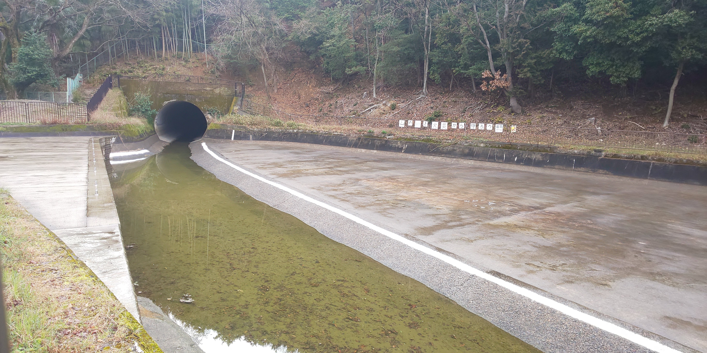
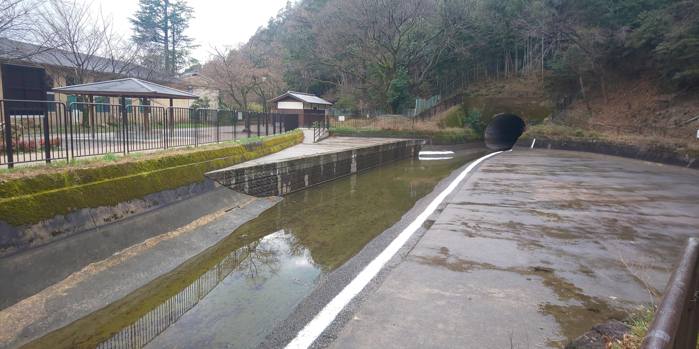
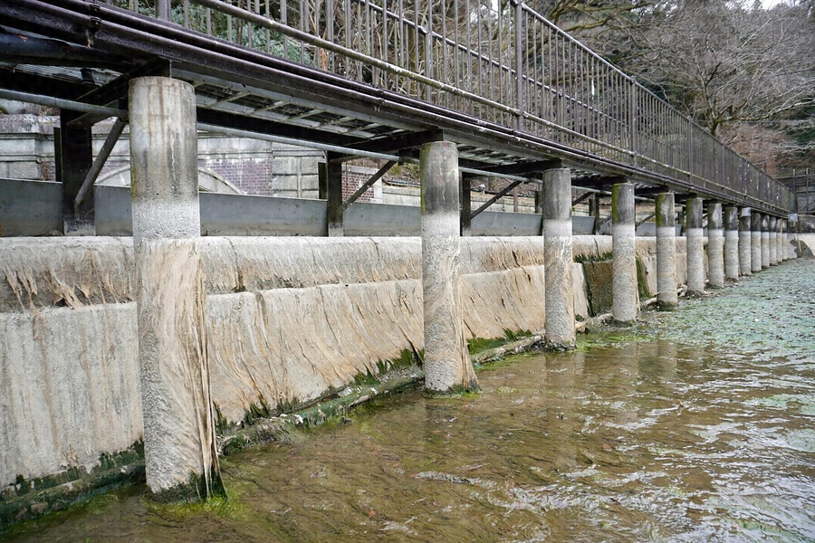
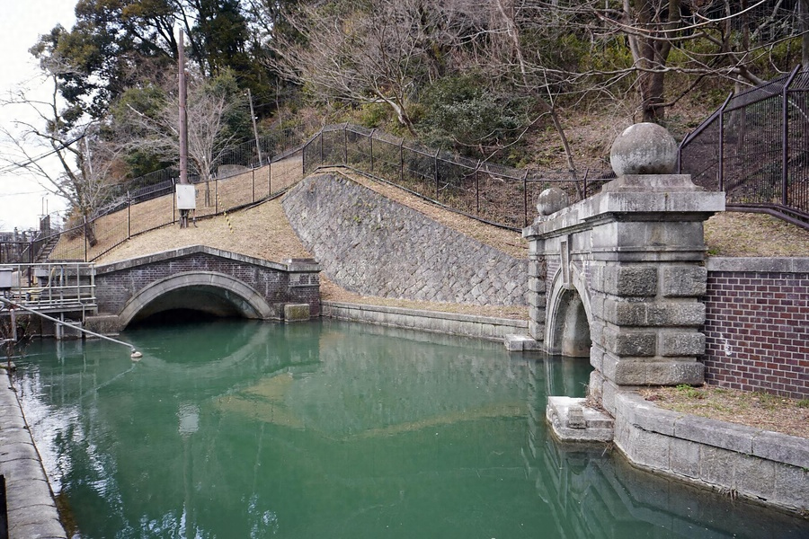
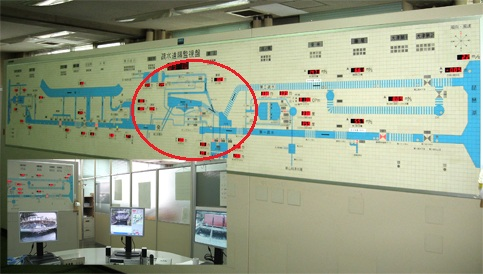
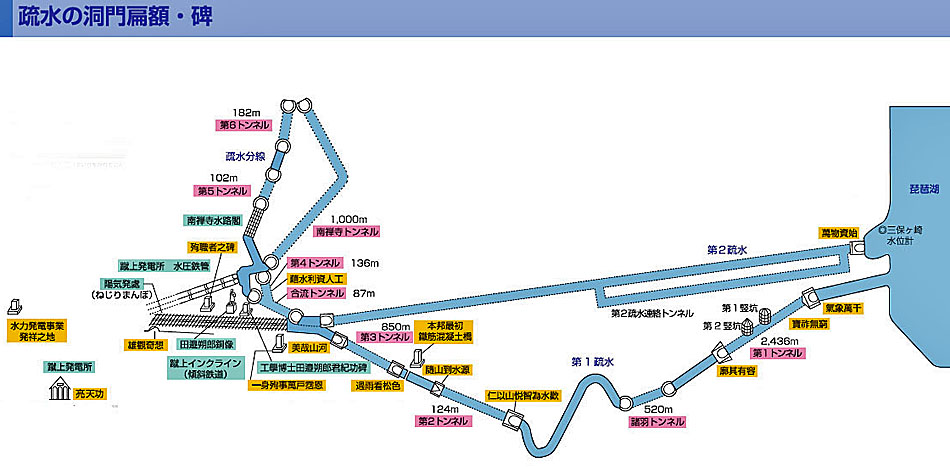
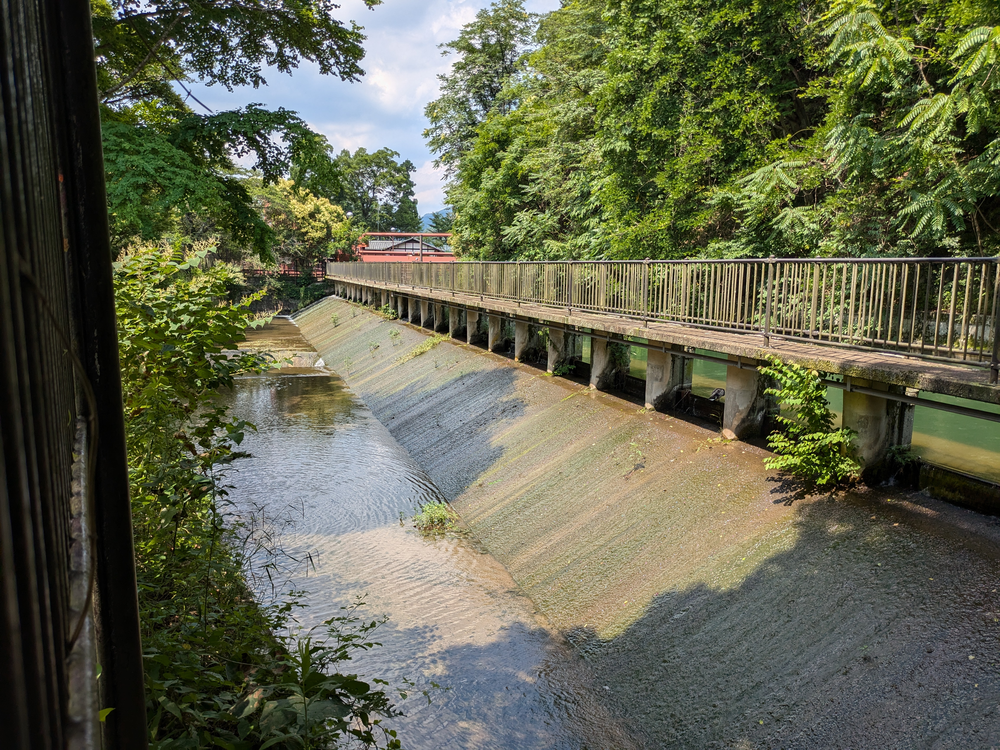
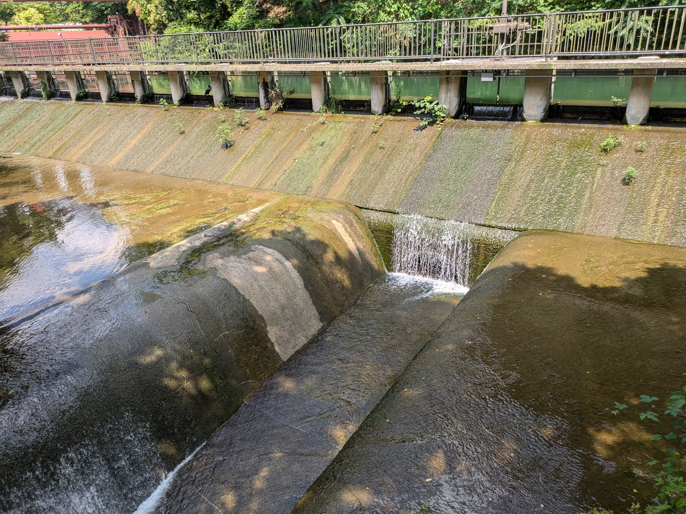

FACILITIES & WATER ROUTE
琵琶湖疏水・設備編
水を通す、
ひとつひとつの構造。
琵琶湖の取水口から大津閘門、山を貫くトンネル、山科の橋、蹴上の分水施設、京都市内の水路へ。第一・第二疏水を、設備の役割と水の流れに沿って読み解きます。
水のルートを見る約20km第1疏水本線の水路網
約7.4km第2疏水
24か所2025年指定の国宝・重文施設
01 — FOLLOW THE WATER
まず、流れを
一本につなぐ。
疏水は一本の水路ではありません。琵琶湖からの取水を二つの導水路で行い、蹴上で水を合わせ、上水道・発電・舟運・灌漑・防火などへ分けてきた施設群です。以下は、公開資料で確認できる主な流路と施設を模式的に並べたものです。
読み方：水の経路は模式表示で、縮尺・距離比・すべての小水路を示すものではありません。第1疏水本線の現在の導水経路と、舟運のための歴史的な経路が異なる区間は、その旨を個別に記します。
水源琵琶湖大津市・三保ヶ崎周辺
第1疏水 · 開渠とトンネル
取水口
大津閘門・運河
第一トンネル
山科の橋・トンネル
蹴上・分水
第2疏水 · 地下導水路
第2取水口
地下導水路・日岡トンネル
連絡洗堰
合流トンネル
蹴上で合流
第1・第2疏水が合流蹴上水道・発電・舟運・分線などへ
蹴上浄水場・水道蹴上発電所・水力インクライン・舟運疏水分線・岡崎／北部鴨川運河・伏見方面
各施設間の正確な接続・操作は管理図面に基づくものではなく、公開されている概要資料を読み解くための概念図です。
EXPLORE THE ROUTE
地図で、流路と設備の位置をたどる。
概念図で見た水の流れを、地図上の位置と照らし合わせてご覧いただけます。マーカーやレイヤーを操作して、琵琶湖から京都・伏見へ続く流路と設備を確認してください。
02 — THE FIRST CANAL · 1890
第一疏水。
山を越え、谷を渡る。
大津から山科を通り蹴上へ。開渠、トンネル、橋、閘門を組み合わせた水路です。
琵琶湖 → 大津運河 → 第一トンネル → 山科 → 蹴上
座標を掲載した施設は、座標から地図を直接開けます。座標がない施設は、施設名で周辺を検索します。
琵琶湖・大津の取水施設
大津閘門
琵琶湖側と大津運河側の水位差を調整し、船を通すための施設。2023年の電動化改修後も非常時用の手動ハンドルを備える。
大津運河
閘門・堰門と第一トンネルを結ぶ延長約197mの直線状の開渠。花崗岩を用いた二段の石垣で護岸される。
長等山・第一トンネル
第一トンネル東口洞門
第一トンネルの大津側の入口。洞門上部に「氣象萬千」の扁額が掲げられている。
第一トンネル
長等山を直線状に貫く煉瓦造トンネル。延長は資料により約2,436mまたは2,444.4mと記録され、途中に二基の竪坑がある。
第一竪坑
第一トンネルの掘削を複数方向から進めるための竪坑。深さ約47m、坑口は直径約5.5mの円形。
第二竪坑
第一トンネルの掘削に用いられた竪坑。深さ約23m、坑口は口径約2.5mの八角形。
第一トンネル西口洞門
第一トンネルの山科側の出口。洞門上部に「廓其有容」の扁額が掲げられている。
山科疏水・舟溜・橋梁
緊急遮断ゲート
阪神・淡路大震災の経験を踏まえ、地震で水路・堤防が損傷した際の流出を防ぐため1999年に設置された。
四ノ宮舟溜（諸羽トンネル東口）


荷の積み下ろしや人の乗降のために舟が停泊した場所。大津側から数えて最初の舟溜。現在は琵琶湖疏水船の乗下船場の一つとなっている。
写真は冬季の停水期に撮影。
諸羽トンネル
第一疏水の水路を付け替えるために設けられたトンネルで、1970年（昭和45年）5月に完成した。
JR湖西線の建設に伴い、線路と疏水の接近を避けるため、従来の水路から山を通るルートに変更された。
もとの水路は埋め立てられ、東山自然緑地の一部となっている。
諸羽舟溜跡（疏水公園）
琵琶湖疏水第一疏水に設けられていた舟溜の跡地。
昭和45年（1970年）の諸羽トンネル完成に伴い、旧水路とともに埋め立てられ、現在は疏水公園として整備されている。
公園の東にはかつてかかっていた3号橋の土台を見ることができる。
第一一号橋
1903年建造の鉄筋コンクリート橋。橋長9.5mで、日本最初期の鉄筋コンクリート橋として紹介される。
蹴上・疏水合流
蹴上インクライン
船を台車に載せ、蹴上と南禅寺船溜の高低差約36mを越えるための施設。蹴上の舟運設備として疏水本線に隣接する。
03 — THE SECOND CANAL · 1912
第二疏水。
水を守る地下の導水路。
水道原水を汚染から守るため、全線を掘抜きトンネルまたは鉄筋コンクリート管の埋設トンネルとした路線です。
約7.4 km延長
15.3 m³/s京都市資料に記載の流量
1908 → 1912着工・完成
第2疏水取水口・洞門
大津市観音寺付近から第2疏水に取水する別系統の入口。取水口洞門には久邇宮邦彦王揮毫の「萬物資始」の扁額がある。第1疏水取水口とは機能上別の施設。
掘抜き・埋設トンネル
地上開渠を設けず、山を掘り抜くトンネルや鉄筋コンクリート管による埋設トンネルで蹴上まで導く。全線が地下構造であることは衛生面の特徴だが、個々の区間名・点検設備・内部構造の詳細は一般公開資料だけでは網羅できない。
日岡トンネル
- 所在地
- 山科区御陵封ジ山町・日ノ岡堤谷町・御陵黒岩・御陵大岩
- 最寄り
- 未確認
- 見学
- 公的資料に見学可否の記載なし（未確認）。現地では立入禁止表示に従う
第2疏水の主要なトンネル。文化遺産オンラインでは1912年、コンクリート造、延長907.2mとして記録され、2025年に重要文化財に指定された。
新旧両水連絡洗堰／合流トンネル
1912年築造の石造・コンクリート造施設（延長28.3m）と、煉瓦造・延長87.3mの合流トンネル。第2疏水を第1疏水系統へつなぐ、蹴上手前の接続施設群として重要文化財に指定。
04 — KEAGE · DISTRIBUTION & POWER
蹴上で水を受け、
必要な先へ分ける。
第1・第2疏水の水が集まる蹴上は、単なる合流点ではありません。水道、発電、舟運、疏水分線へ水を配るための構造物がまとまっています。
連絡・重要文化財
新旧両水連絡洗堰
新旧両水連絡洗堰

1912年に築造された石造・コンクリート造の洗堰で、延長は28.3m。第二疏水の水を第一疏水系統へ連絡する施設です。
所在地
蹴上周辺（詳細未確認）
合流・重要文化財
左側が合流トンネル。右側は第2疏水の出口(日岡トンネル)。
合流トンネル

第一疏水と第二疏水の合流地点に設けられたトンネル。全長約87m。両疏水の水はここで合流する。
合流トンネル洞内で、第4トンネルと分岐する。詳細は第4トンネルの項目を参照。
所在地
詳細未確認
疏水路・分岐（名称未確認）
疏水遠隔操作盤の系統図 ※京都市上下水道局HPより
蹴上周辺の疏水路図 ※京都市上下水道局HPより
第4トンネル


琵琶湖疏水の疏水分線に設けられたトンネルで、全長は136m。琵琶湖疏水管理事務所の操作盤の画像から、合流トンネルの洞内で分岐していると考えられる。
所在地
蹴上周辺（正確な位置は未確認）
分水・重要文化財
蹴上放水所
蹴上放水所の水路設備
蹴上放水所


石造・コンクリート造の洗堰と放水路からなる設備。文化庁台帳では洗堰の延長51.6mと記録されます。疏水の流れを調整し、用途別の水路へ送る機能を担います。
- 最寄り
- 地下鉄東西線「蹴上」駅が最寄り（個別の徒歩分数は未確認）
- 見学
- 管理施設のため外から見学のみ
所在地
左京区粟田口山下町
発電
写真を追加：蹴上発電所・水圧鉄管
蹴上発電所・水圧鉄管
疏水の落差を利用して発電する設備。1891年に運転開始し、電灯・工場動力・市電など京都の電化を支えました。旧本館は重要文化財です。発電設備の水路接続は発電所の運転・管理施設で、自由に立ち入れる見学施設ではありません。
- 最寄り
- 地下鉄「蹴上」駅2番出口から徒歩約5分／市バス「南禅寺・疏水記念館・動物園東門前」から徒歩約5分
- 見学
- 現役の発電施設で、敷地内は立入不可。道路・疏水沿いから外観のみ
水道・配水
写真を追加：蹴上浄水場／第一高区配水池
蹴上浄水場／第一高区配水池
第2疏水完成とともに近代水道が整備され、1912年に給水を開始しました。取水した水は浄水場で処理し、配水施設・管路を通って市内へ届きます。第一高区配水池は水道系統の一部であり、水路沿いの開渠とは別の施設群です。
所在地
詳細未確認
舟運・高低差
写真を追加：蹴上インクライン
蹴上船溜／インクライン
第1疏水の舟運経路に設けた船溜と傾斜鉄道です。約36mの高低差を、台車に載せた船ごと越えました。国宝に指定されたインクラインの文化財台帳上の長さは566.1mです。
- 最寄り
- 地下鉄「蹴上」駅から徒歩約3〜5分（案内により異なります）／市バス「岡崎法勝寺町」から徒歩約5分
- 見学
- レールが保存され、線路内を自由に歩けます。春は桜の名所で混雑します
見学施設
写真を追加：琵琶湖疏水記念館
琵琶湖疏水記念館
疏水の歴史と仕組みを展示する施設です。インクラインや南禅寺船溜に近く、蹴上周辺を歩く際の起点に使えます。
- 最寄り
- 地下鉄「蹴上」駅から徒歩約7分／市バス「岡崎法勝寺町」から徒歩約4分
- 開館
- 9:00〜17:00（入館は16:30まで）。月曜（祝日の場合は翌平日）と12月29日〜1月3日は休館。入館無料
- 問合せ
- 075-752-2530（開館日などは訪問前に公式サイトで確認）
分水・文化財
写真を追加：疏水分線
疏水分線
蹴上から分かれて南禅寺境内を横切り、北へ向かう水路です。国宝の南禅寺水路閣、扇ダム、若王子取水池、哲学の道などが沿線に続きます。分線は第1疏水本線や伏見へ向かう鴨川運河と別の系統です。
所在地
蹴上から南禅寺方面
05 — THE BRANCH CANAL · 1890
疏水分線。
南禅寺から哲学の道へ。
蹴上から北へ分かれ、水路閣、トンネル、遊水地、取水池を経て、哲学の道の水辺へ続く水路です。明治期の分線は約8.4km、現在の管理区間は約3.3kmと、資料によって数え方が異なります。
1
蹴上で分岐
南禅寺水路閣
第五トンネル
蹴上から南禅寺へ
蹴上 → 分線 → 南禅寺水路閣 → 第五トンネル
蹴上で分かれる分線
第1疏水から北へ分かれ、1890年に完成した水路。当初は水車の動力で工場を呼び込む計画があったとされるが、工事の途中で水力発電の実用化に踏み切ったことで、水の使い方が見直された。沿線への水力利用・灌漑・防火用水の供給が、分線の主な役割として整理されている。
分線は伏見へ向かう鴨川運河とは別の系統。工事費は第1疏水の大津〜鴨川間と合わせて125万円余り。
南禅寺水路閣
- 所在地
- 左京区南禅寺福地町86
- 最寄り
- 地下鉄「蹴上」駅1番出口から徒歩約7分（南禅寺側の案内では約10分）
- 見学
- 南禅寺の境内を通って見る。南禅寺の拝観時間は8:40〜16:30（季節により17:00まで）。水路閣は拝観有料区域には含まれないが、料金は南禅寺で最新情報を確認。境内は三脚・一脚の使用や許可のない撮影が禁止
南禅寺境内の谷を越えるための煉瓦造14連アーチ橋。1888年竣工、橋長93.2m。いまも橋の上を疏水分線の水が流れる。寺院の景観との調和が課題となり、古代ローマの水道橋を思わせる意匠が採られたと紹介される。
第五トンネル
- 所在地
- 左京区南禅寺福地町
- 最寄り
- 南禅寺境内の奥。徒歩分数は未確認
- 見学
- 公的資料に見学可否の記載なし（未確認）。トンネル内は立入不可と考える
南禅寺本坊の裏手に口を開ける煉瓦造のトンネル。1890年竣工、延長101.8m、翼壁を附属する。所在地は左京区南禅寺福地町で、2025年8月27日に重要文化財に指定された。水路閣を渡った分線の水は、ここから山裾へ入る。
2
第五トンネルを出る
扇ダム（遊水地）
放水路 → 南禅寺船溜
第六トンネル
若王子取水池 → 松ケ崎浄水場
扇ダム・第六トンネル・若王子取水池
第五トンネル → 扇ダム → 第六トンネル → 若王子取水池 → 若王子橋
扇ダム／扇ダム放水路
- 所在地
- 鹿ケ谷付近とされる（公的資料では未確認）
- 最寄り
- 未確認
- 見学
- 未確認。管理施設のため、立入禁止の表示や柵を越えない
第五トンネルを抜けた分線の水が集まる遊水地。発電や大規模な貯水を目的とするダムではなく、分線の水量を受けて調整する施設と解説されている。ここから放水路が分かれて南禅寺船溜へ水を送り、周辺の庭園・別荘地の水利にも関わるとされる。
土木学会は2021年度の選奨土木遺産に「扇ダム放水路」を1890年頃の施設として含めている。管理施設のため見学できる範囲は限られ、撮影は公道など公開された場所から。
第六トンネル
- 所在地
- 左京区南禅寺福地町・永観堂町・若王子町
- 最寄り
- 哲学の道の南端（若王子橋）の近く。徒歩分数は未確認
- 見学
- 公的資料に見学可否の記載なし（未確認）
扇ダムの先から続く煉瓦造のトンネル。1888年竣工、延長181.8m。所在地は左京区の南禅寺福地町・永観堂町・若王子町にまたがり、2025年8月27日に重要文化財に指定された。分線の水は第六トンネルの北口側へ抜ける。
若王子取水池
- 所在地
- 左京区若王子町
- 最寄り
- 哲学の道の南端（若王子橋）付近。徒歩分数は未確認
- 見学
- 上下水道施設で、公開情報なし（未確認）。敷地内には入らず、外から見える範囲に
松ケ崎浄水場の取水池で、所在地は左京区若王子町。疏水から導いた原水をまず池に受けて重い砂を沈め、粗目スクリーンと除塵機で藻や浮遊するごみを取り除く。その後、専用の導水管で浄水場の着水井へ送られる。
松ケ崎浄水場は1927年に市内2番目の浄水場として完成し、現在は市内北部へ給水している（京都市上下水道局）。
3
若王子橋
哲学の道・関雪桜
銀閣寺橋
哲学の道
若王子橋 → 哲学の道 → 銀閣寺橋
哲学の道
- 所在地
- 左京区（若王子橋〜銀閣寺橋）
- 最寄り
- 南端：地下鉄「蹴上」駅から徒歩約20分、または市バス5番「南禅寺永観堂前」下車／北端：市バス「銀閣寺道」下車
- 見学
- 常時開放の散策路で、入場料はない。観光シーズンはバスが混雑するため、地下鉄の利用を勧める案内がある
疏水分線の西岸に沿う、若王子橋から銀閣寺橋まで約1.5kmの道（観光案内では約2kmとも）。もとは1890年の疏水完成時に管理用道路として設けられ、のちに西田幾多郎や田辺元ら京都大学の哲学者が思索しながら歩いたことが名の由来とされる。
「哲学の道」と呼ぶことになったのは1972年。地元住民の保存運動がきっかけで、1987年に「日本の道100選」に選ばれた。
関雪桜
日本画家の橋本関雪と妻のよねが、1921年に京都市へ桜の苗木300本を寄贈したのが始まり。現在の木は植え替えられたもので、いまも「関雪桜」と呼ばれる。疏水の山側は森、対岸側に桜並木が続く区間がある。
北へ流れる疏水
近くの白川が標高に従って北から南へ流れるのに対し、人工の疏水分線は南から北へ流れる。山裾の高い位置にそっと水を通した、分線の特徴がよくわかる区間。
読み方：ここでは、国・京都市・文化庁・土木学会の公開資料で確認できた情報を中心に整理しています。扇ダムやトンネルの通り抜け順は、現地を歩いて確かめた解説記事も参照しており、細部は今後の公式資料で更新する可能性があります。また、銀閣寺橋より北、高野・下鴨・堀川方面へ続いた明治期の分線は、公開資料で施設ごとの確認が取れていないため、このページでは扱っていません。
06 — DOWNSTREAM TO FUSHIMI
蹴上から、
京都市内・伏見へ。
本線は蹴上を越えて岡崎・鴨川合流点へ向かい、鴨川運河を経て深草・伏見方面へ続く。歴史上の船運路、現在の導水路、発電・放水設備を区別して確認できる主要施設を示します。
岡崎・鴨川合流点
蹴上から下る水路が岡崎を経て鴨川側へつながる地点。水路の合流・取水の詳細は区間ごとの管理資料を参照。
夷川閘門・夷川発電所
- 所在地
- 左京区聖護院蓮華蔵町
- 最寄り
- 地下鉄「東山」駅・「蹴上」駅、市バス「岡崎公園 美術館・平安神宮前」が近隣（徒歩分数は未確認）
- 見学
- 現役の施設のため外から見学のみ。手前の岡崎疏水の遊歩道は自由に歩ける
鴨川沿いの舟運・発電に関わる施設。夷川閘門は船の通行と水位調整に関わり、夷川発電所本館は重要文化財。夷川管理棟には1989年完成の疏水遠隔監視制御設備があり、大津から伏見までの流量管理や大雨時の調整を担う。
鴨川運河・発電／放水施設
鴨川沿いを南下し、京都市内から伏見へ水を運ぶ水路系統。第一一号橋などの橋梁、七瀬川放水所、伏見発電所本館などが関連施設として記録されている。七瀬川放水所は疏水の流量調整・放水に関わる施設。
伏見上ダム・伏見閘門
- 所在地
- 未確認（公的資料で個別の所在地を確認できていない）
- 注意
- 淀川の「三栖閘門」（国土交通省の管理、京阪「中書島」駅から徒歩約10分）は、疏水の伏見閘門とは別の施設
伏見方面で水位と舟運を調整する水利施設。伏見閘門は1931年完成と京都市年表に記載される歴史的施設。2025年指定の24施設一覧には含まれないため、国宝・重要文化財指定施設と混同しない。
伏見の水路終端・濠川方面
琵琶湖疏水本線を中心とする水路網は伏見へ達し、濠川方面につながる。全経路のうち一部の区間は河川・雨水排水系統と関係し、管理上の流量調整が行われる。
07 — DESIGNATED HERITAGE INVENTORY
指定された24施設。
水路網の骨格。
2025年8月27日指定。国宝5施設を含む重要文化財24施設です。
国宝 · 5施設
- 第一トンネル
- 第二トンネル
- 第三トンネル
- インクライン
- 南禅寺水路閣
重要文化財 · 国宝を除く19施設
- 大津閘門及び堰門
- 大津運河
- 安朱川水路橋
- 第一〇号橋
- 第一一号橋
- 夷川閘門
- 第五トンネル（明治23年）
- 第六トンネル（明治21年）
- 日岡トンネル
- 新旧両水連絡洗堰
- 合流トンネル
- 蹴上放水所
- 七瀬川放水所
- 蹴上浄水場第一高区配水池
- 旧御所水道大日山水源地喞筒所
- 蹴上発電所旧本館
- 夷川発電所本館
- 伏見発電所本館
- 本願寺水道水源池
第五・第六トンネルについて：文化庁の記録では、第五トンネル（1890年・煉瓦造・延長101.8m・南禅寺福地町）と第六トンネル（1888年・煉瓦造・延長181.8m・南禅寺福地町・永観堂町・若王子町）は、いずれも左京区の南禅寺〜若王子付近にあり、疏水分線沿いのトンネルです。
24施設は文化財指定対象の数であり、疏水全体にある橋・水門・取水設備・弁・点検口など全資産の総数ではありません。
SOURCES & SCOPE
根拠資料と、
このページの範囲。
施設名・指定区分・寸法は、自治体・文化庁の公開情報を優先して記しました。解説ページ・観光案内の数値が異なる場合は、出典ごとの記載を併記しています。
大津市大津閘門・堰門・運河、第一トンネル・竪坑の解説↗
京都市上下水道局第1疏水・流路・トンネル・竪坑の歴史↗
京都市上下水道局第2疏水・流量・水道の説明↗
京都市上下水道局改修・遠隔監視制御・第2疏水連絡トンネル↗
京都市上下水道局国宝・重要文化財の指定対象施設一覧↗
京都市上下水道局疏水名所案内・沿線の構造物↗
びわ湖疏水船 公式沿線施設・舟航ルートの案内↗
文化遺産オンライン第一トンネルの構造・延長・指定区分↗
文化遺産オンライン日岡トンネルの構造・延長・指定区分↗
琵琶湖疏水記念館写真・地図・所蔵資料・散策案内↗
設備調査ノート記載内容・確認事項・公開情報の限界↗
琵琶湖疏水の全体紹介歴史・用途・現在の姿を読む↗
網羅性の範囲：第一・第二疏水の主要流路と、公開資料・沿線案内・2025年の文化財指定資料で名前を確認できる施設を整理しています。非公開の運転用図面、全マンホール・弁・点検口・埋設分岐を含む管理用資産台帳ではありません。現役インフラのため、現地では立入禁止区域に入らず、最新の公開・運航情報に従ってください。